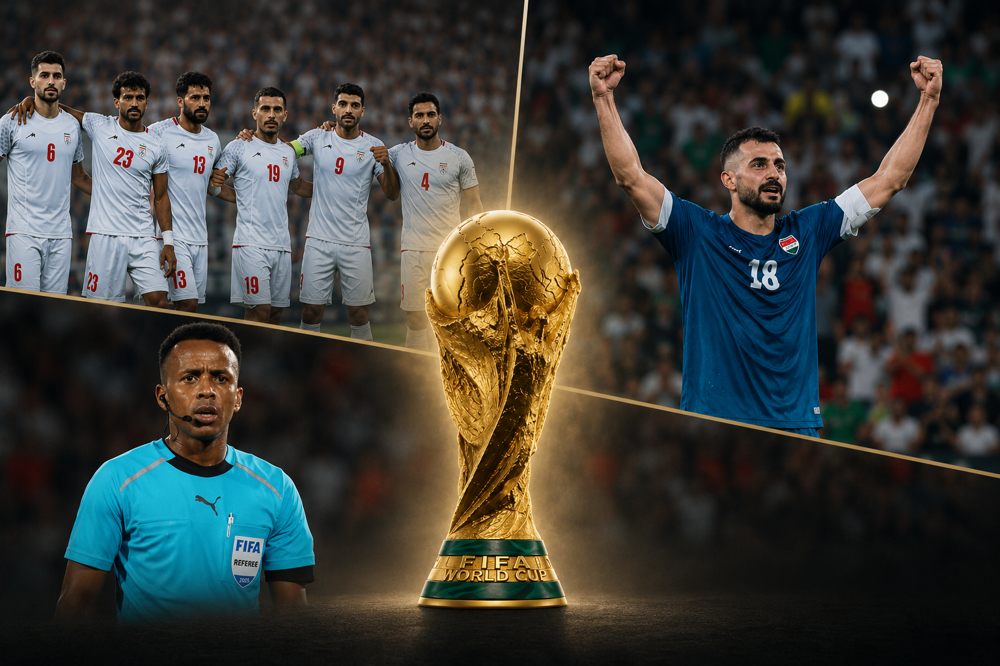

The 2026 FIFA World Cup is already underway. The tournament officially kicked off on June 11 in Mexico City with the opening match between Mexico and South Africa. It is the largest World Cup in history, featuring 48 national teams instead of 32, more matches than ever before, and millions—if not billions—of fans following the competition from every corner of the globe.
For the first time in my memory of World Cups, with my earliest recollections dating back to 2010, off-field developments have attracted such significant media attention from a political perspective.
One could argue that previous World Cups also generated similar discussions. In 2010, South Africa became the first African nation to host the tournament, while Nelson Mandela's presence and symbolism dominated much of the international narrative surrounding the event (Smith, 2010). In 2014, as Brazil prepared for the 2016 Olympic Games, the World Cup served as a precursor to broader infrastructure projects, including the displacement of local communities and extensive urban redevelopment aimed at accommodating the tournament (Phillips, 2011). Likewise, the corruption allegations surrounding the awarding of the 2018 and 2022 World Cups to Russia and Qatar respectively generated widespread debate regarding governance and transparency within world football (Panja & Draper, 2020).
This year, however, the discussion emerged even before the first ball was kicked. In the days leading up to the tournament, international media focused on three seemingly unrelated stories. Somali referee Omar Artan encountered difficulties entering the United States despite being officially appointed to officiate World Cup matches. Iran's national team was forced to establish its training base in Tijuana, Mexico, crossing the border only when necessary to play matches in the United States. At the same time, Iraqi international striker Aymen Hussein underwent extensive questioning upon his arrival in the country, including inquiries regarding his social media activity.
At first glance, these appear to be three entirely different stories: a referee, a national team, and a football player. Looking deeper, however, reveals a common denominator. All three cases revolve around their first interaction with the United States, whether through immigration authorities, visa procedures, or broader diplomatic realities.
During major sporting events, two dominant schools of thought usually emerge. On one side are those who view such incidents as inseparable from political developments and international affairs. On the other are those who focus solely on the sporting dimension, believing that competitions of this scale exist above politics and contemporary events.
Reality, however, is far more complex.
Athletes travel with passports. Sporting events are hosted by states. Entry requirements are determined by governments. No matter how global football—or sport in general—may appear, it continues to operate within a world defined by borders, geopolitical tensions, and political decisions.
The 2026 World Cup serves as a powerful reminder of this reality. While FIFA promotes football as a vehicle for international understanding and coexistence, social and political realities often prove stronger than sporting ideals. For some, entering another country is a routine procedure. For others, it can involve lengthy interrogations, additional scrutiny, visa complications, or even outright denial of entry.
To be clear, this does not mean that the World Cup—or any major sporting vent—ceases to be a celebration capable of bringing together cultures, religions, and diverse perspectives. Rather, it highlights the extent to which sport reflects the society in which it takes place. The same concerns, political choices, and international tensions that shape the lives of millions inevitably influence the sporting world as well.
Perhaps no case illustrates this discussion more clearly than that of Somali referee Omar Artan. Artan was set to become the first Somali referee in World Cup history. He was also named African Referee of the Year for 2025. Yet despite his appointment by FIFA, he faced difficulties entering the United States following new travel restrictions introduced by the American government on January 1, 2026. His exclusion occurred on June 8, just three days before the tournament began.
In a Guardian opinion piece, Ofori (2026) presented Artan's case as a striking example of the contradiction between football's global narrative and the restrictions imposed by modern nation-states. According to the article, the image of a referee selected by FIFA for the world's biggest football tournament, yet unable to enter the host country, symbolizes the tension between the globalization of sport and renewed political emphasis on border control and migration management.
Whether one agrees with this interpretation or not, the debate it sparked is significant. The issue extends beyond a single referee or an isolated incident. It raises broader questions about whether international sporting competitions can truly function as global institutions when participation remains dependent upon national political decisions.
At another level, the episode exposed FIFA itself. Critics questioned why the organization failed to anticipate such a situation, forcing FIFA President Gianni Infantino to respond to journalists' concerns with a brief message: "Chill and relax" (Sky Sports, 2026).
If Omar Artan's case highlighted the obstacles faced by an individual, the situation involving Iran's national team demonstrated how such challenges can affect an entire World Cup delegation.
The issue became even more notable given the recent tensions between Iran and the United States.
Initially, the Iranian Football Federation had selected Tucson, Arizona, as its World Cup training base. However, only weeks before the tournament, FIFA approved a relocation to Tijuana, Mexico, citing security concerns and difficulties related to the entry of members of the Iranian delegation into the United States.
As reported by Abnos (2026), Iran now prepares in training facilities located in Tijuana under heightened security measures and the presence of armed personnel. Several members of the technical and administrative staff reportedly faced difficulties obtaining American visas.
Even more remarkable is the fact that Iran competes in stadiums located in the United States while living and training in Mexico, often traveling across the border on match days. Reports also suggest that the Iranian Football Federation requested specific guarantees regarding media interactions and the treatment of national symbols throughout the tournament.
This is not the first time that Iran and the United States have intersected within a sporting context. During the 1998 World Cup in France, Iran defeated the United States 2–1 in a match remembered as much for its political symbolism as for the football itself. Extraordinary security measures surrounded the event, reflecting the broader diplomatic tensions between the two countries.
As Iran prepares to face New Zealand on June 16, attention will once again focus not only on the football, but also on the circumstances surrounding the team's participation.
The third case concerns Iraqi striker Aymen Hussein.
According to Reuters (Hamid & Rasheed, 2026), Hussein was detained for approximately seven hours upon arriving at Chicago's airport before eventually being allowed to enter the United States. Sources close to the Iraqi Football Association stated that some of the questioning focused on his social media activity, including likes and interactions on previous posts that reportedly raised concerns among authorities.
The incident also reflects broader developments in American immigration policy. Recent proposals suggest that visa holders entering the United States may be required to provide access to up to five years of social media history upon request by federal authorities (FitzGerald, 2025).
Unlike Omar Artan, Hussein was ultimately admitted and joined Iraq's World Cup squad. Nevertheless, his experience became part of a broader pattern that attracted international media attention in the days before the tournament.
The significance of this case lies not merely in the identity of the athlete involved, but in what it symbolizes. Hussein's first experience connected to the world's largest football tournament was not a training session, a press conference, or a match. It was a prolonged border inspection.
In this sense, his story complements the broader narrative emerging around the 2026 World Cup: a referee unable to enter the host country, a national team forced to establish its base outside it, and a football player subjected to extensive scrutiny upon arrival.
Taken together, these three cases represent more than isolated incidents. They form a powerful symbolic picture. A referee denied entry. A national team operating from outside the host country. An international footballer subjected to hours of questioning at the border.
Regardless of the specific circumstances surrounding each case, these images can be interpreted as expressions of a broader policy framework centered on stricter border controls and reduced tolerance toward mobility from certain regions of the world.
In that sense, the message carries a wider symbolic meaning: no one is entirely exempt from such scrutiny. Whether it is a famous footballer participating in the World Cup or an anonymous individual seeking safety and a better life away from war, borders continue to shape opportunities, movement, and belonging.
Perhaps, then, the real question raised by the 2026 World Cup is not whether politics has entered sport.
Perhaps the real question is whether sport was ever truly separate from the society that surrounds it.
Petros Lolis
MSc, Physical Education Teacher